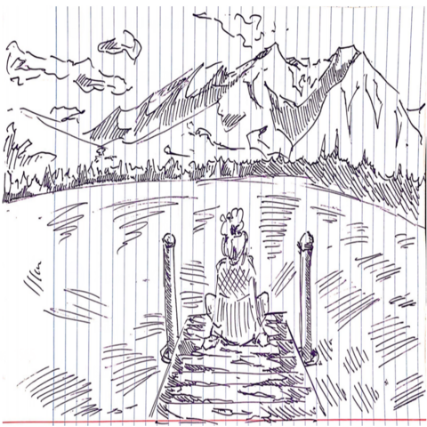

By Bruce Changlong Xu
Talking with both Eastern and Western Venture Capital firms has allowed me to understand that there is a fundamental information asymmetry that has allowed disparity to emerge between countries such as the United Kingdom, the United States and Asian Nations/Cities such as the Hong Kong SAR and Indonesia, where our company’s efforts will be focused on. This difference has been both bridged and accelerated with the rise of the internet and produced tensions that has resulted in artifacts such as the US-China trade war.
For every Google there will be a Baidu, for every Whatsapp there will be a Wechat and similarly for every Tik-Tok there will be a Douyin. The Chinese Tech industry has long been labelled as a copy-cat of that of the United States, however this doesn’t imply that the products offered are lesser than those that are offered in the West. The Chinese Market has completely different priorities than the Western Market, reflecting the different values that Chinese people have carried with them through the centuries. From an outsiders perspective it might seem like a mess, and indeed as Jack Ma, a world-class Chinese Entrepreneur states “中国金融没有系统性风险，因为没有系统!”. Jokes aside, it must be acknowledged that both systems have their individual strengths and weaknesses, and the Chinese Economy is undoubtedly a force – if not the force - to be reckoned with in the 21st Century.
The difference lies in the way the respective governments utilize information. The free flow of information is very much like the circular flow of money, transferring from households to firms, from public to private entities. Eastern and Western governments tend to have different approaches to information distribution, and both are extraordinarily effective in their respective contexts, it’s fruitless to compare. Whether information is clogged in a particular sector of the economy or flows freely like a river stream – the key is to not let information be lost, just as you wouldn’t want your money to needlessly be washed down the drain. Presque Partout Sino is a company that empowers clients with information and knowledge in a fastpaced technological world.
Shifting to a distantly related topic, I would like to touch upon Alzheimer’s Disease and the Information Paradox. The idea that physical information could be eradicated beyond the event horizon of a black hole has long been debated by Physicists, which led to Stephen Hawking’s groundbreaking formulation of “Hawking Radiation”. The core idea is too technical to be touched upon in a short article, but this drew me to the idea of whether information (our thoughts, memories and ambitions) really vanish during either early or late onset Alzheimer’s Disease, and if so where does it go? Observing patients and sufferers of Alzheimer’s disease is one of the most heartbreaking things in the world. I strongly believe that more should be done – more research, more funding, more thought and energy to combat the disease. We currently hypothesize what causes brain matter to atrophy in Alzheimer’s is the accumulation of Tau and Beta Amyloid proteins, as well as the relevance of the APOE Gene on Chromosome 19. But much beyond that, it’s a mystery. I strongly believe that more work should be done at the molecular level, as well as examining the biological risk factors that could induce Alzheimer’s down the line.
Our old are just as valuable as our young and even more so for the wisdom and experience that they carry. The voices of the distant past lie with our parents, grandparents, greatgrandparents and beyond – it is paramount to listen, respect and care for them.